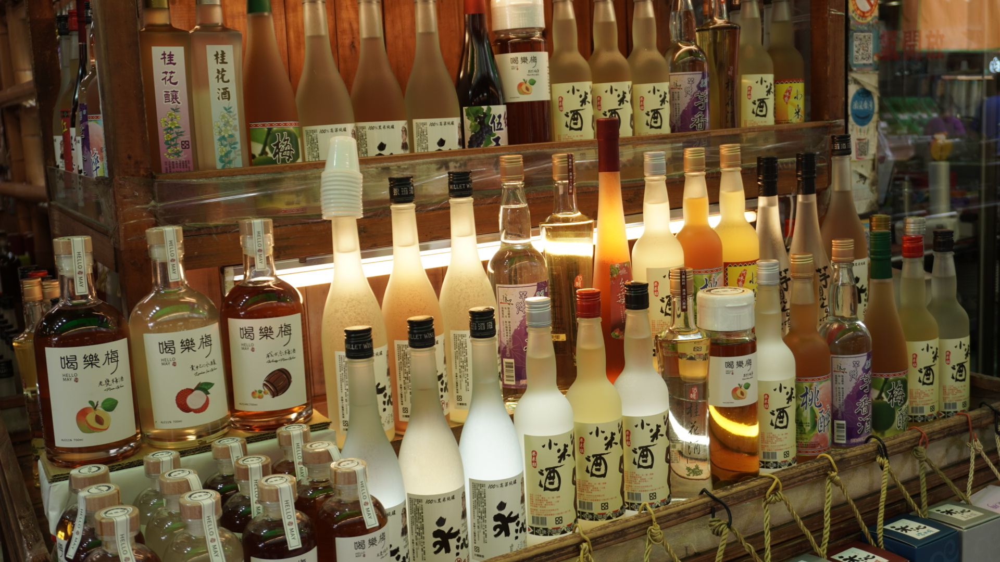
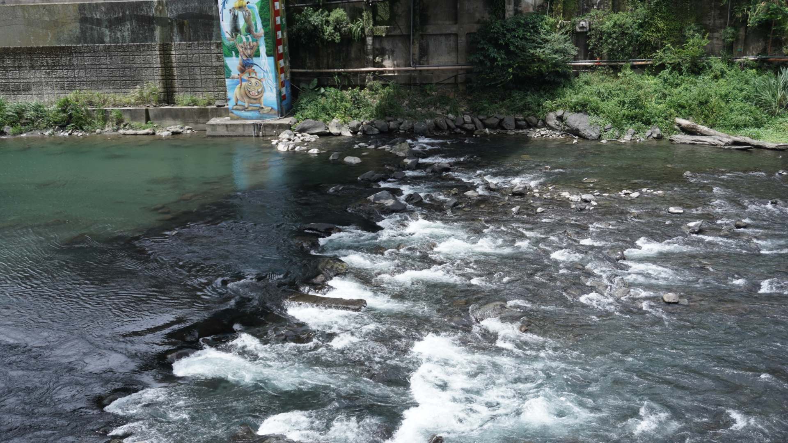
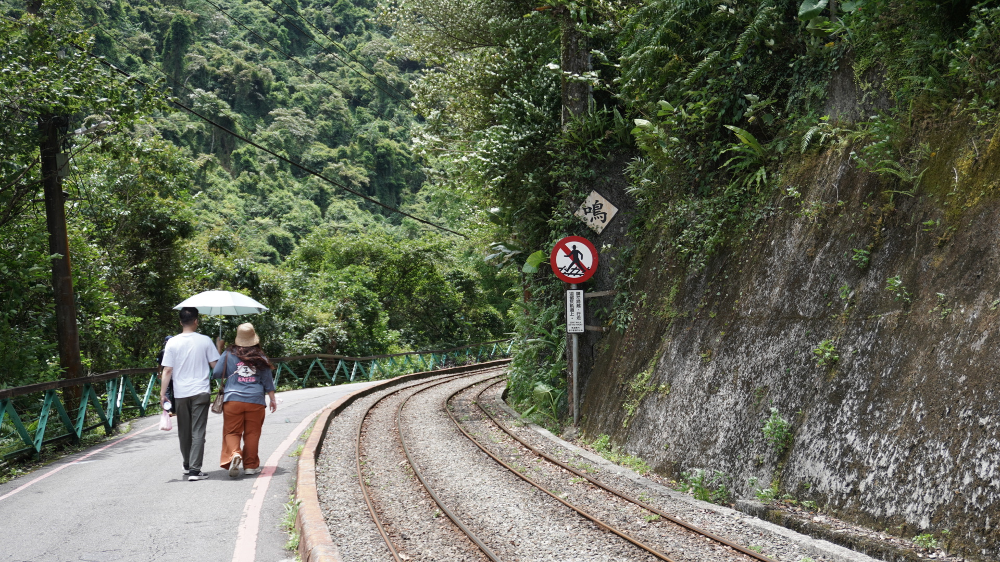

新北市烏來區
基本資訊
位於新北市南端，地處山區，為台北盆地與南勢溪流域交界的丘陵與山林地帶。烏來因自然景觀、溫泉資源以及原住民文化而聞名，是北台灣著名的山林休閒與觀光區域。 區內山巒起伏、溪流縱橫，擁有豐富的自然生態，適合登山、溯溪與賞鳥等戶外活動。烏來溫泉以碳酸泉聞名，結合山林環境，形成獨特的休閒旅遊體驗。區內亦是泰雅族原住民的聚落所在地，保留傳統建築、工藝與文化活動，使烏來兼具自然、生態與人文特色。
推薦景點
| 烏來觀光台車
是烏來著名的觀光鐵道設施，原本是為運送木材與礦石而設的山區小火車，後來轉型為遊客觀光使用。台車沿著烏來溪谷與山林小徑行駛，穿梭於青翠山林之間，保留歷史鐵道的原始風貌，成為烏來旅遊的特色體驗之一。 乘坐烏來台車，遊客可輕鬆欣賞兩岸溪流、瀑布及林間景色，並感受早期林業運輸的歷史氛圍。台車路線短程且平穩，非常適合家庭旅遊或老少皆宜的休閒行程，也常與烏來老街、溫泉等景點搭配參觀。
| 雲仙樂園
是結合自然景觀與休閒設施的觀光樂園。園區地處山林間，環境清幽，依山勢設計步道、觀景平台與遊樂設施，讓遊客在遊憩過程中享受山林美景與清新空氣。 園內設施包含溫泉泡腳區、兒童遊戲區以及生態步道，提供不同年齡層遊客的休閒選擇。周邊山谷、溪流與林木景觀與園區設施相互呼應，遊客既可進行輕鬆健行，也能欣賞瀑布與山林景致，體驗親近自然的樂趣。


